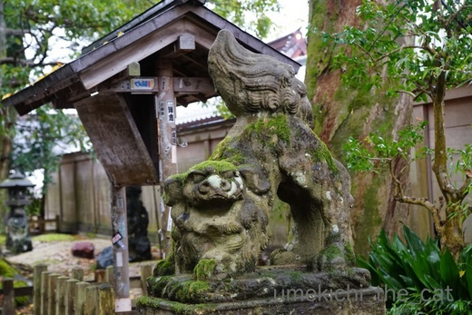
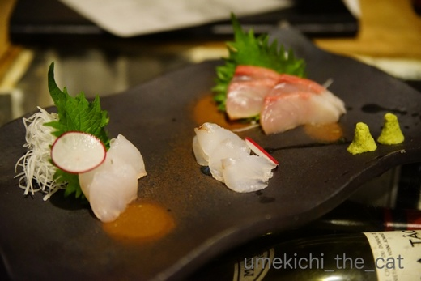
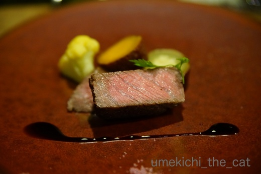
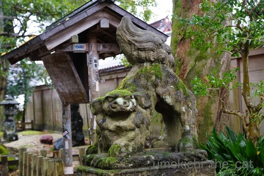
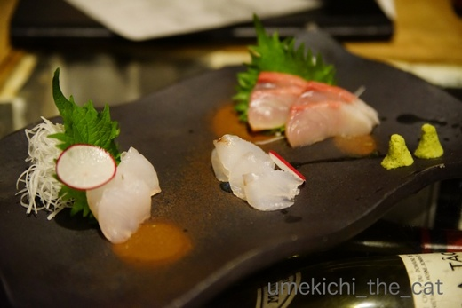
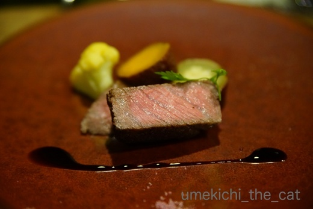

お留守番1日目と天橋立 [梅吉]
先週18日、お留守番1日目の梅吉の様子です。

まずシッターさんから送られてきた写真がこれです^^;
ちなみにオレンジのスリッパは私の。
シッターさんも梅吉にガブガブされるのがわかっているので
我が家に来たらすぐにスリッパを履くことにしているようですw
以下シッターさんのメール。
「動かなければ足にスリスリしてくれるのですが、
じっとしているわけにもいかないので足を動かした途端、
早速飛びついてきましたね笑
それからは廊下をパンチされながら中に入り
冷蔵庫に行ってごはんを出すとまたスリスリに代わっていました^^;
調子がいいですねぇ。」

上が調子のいい梅吉さんです(⌒_⌒;
ガブガブしていない時にカメラを向けると顔を作る、とも言われていましたwww
本当だねー、キリッとしているねー(≧ω≦｡)

ちゃんと猫草も食べさせてもらってこの後はおもちゃではなく
シッターさんの足で遊んでいたようですよ。
ガブガブ出来るなら元気な証拠。
それでも夜の一人は寂しいだろうな・・・・と若干の罪悪感を感じながら宿で眠りにつきました。
梅吉は夜中に何度か私を起こすのですが
（おやつー！お布団に入れてー！！なでなでしてー！！！などの理由）
これがないとさぞかしぐっすり眠れるのでは？と思ったら大間違い。
あの小さな温もりを無意識にでも感じていないと
よく眠れないようになってしまったみたいです。
この先、家でも外でもぐっすり眠れることはもうあまりないかな・・・
眠りが浅くなって来たんじゃない？という疑問はスルーしますよ（爆）
以下は覚書の旅行記です。
天橋立はどうだったのよ、という方は見てくださいね(^_－)☆
 ↑ガブッと一押し↑
↑ガブッと一押し↑
天気予報を見て晴れ間はあきらめていたのですが本降りの雨の天橋立でした。
でも雨に煙る景色もなかなか幻想的ではないですか？
雲間から光がさす瞬間もあって天野橋を使えない神々が
光を伝って降りて来ているんじゃないかと思いましたよ。
股のぞき？カサを置いて濡れながらやってみましたがよくわかりませんでしたw
この後元伊勢 籠神社、奥宮 真名井神社と回ってこの旅の目的の一つの成相寺に向かいました。
歴史も古く由緒正しい籠神社・真名井神社のお話は上っ面しか知らない私にはとても解説できません。
興味のある方は神社のHPかリュカさんのブログでどうぞー。
リュカさんの解説は分かりやすいように噛み砕いてくれているのでなまじの解説書より
ずっと分かりやすいですよ＾＾

ちなみに籠神社の狛犬さんは猫ヨガのポーズ。
真名井神社は狛犬ではなく狛竜でした。
成相寺では西国三十三箇所の御朱印をいただいて紅葉を愛でて来ました。
この日のお宿はワインとお宿 千歳です。
知恩寺のすぐ近く。
部屋に置いてあった絵本によると・・・
その昔この地を荒らし回っていた龍を説き伏せるため
天の神様が文殊様に協力をお願いしたそう。（神と仏の協力譚！）
文殊様は千年にわたって龍を説き伏せ続け改心させたんだとか。
天の神は文殊様に知恩寺を作ってお住まいいただき
龍は天橋立の真水の湧く所に橋立明神として祀られた・・・とのことでした。
宿名の「千歳」は文殊様ががんばった千年から採ったのでしょうね。
部屋の窓から天橋立の松林が見えます。
旋回橋もよく見えましたー。
船が来ると
橋が回って船が通って行きます。
お楽しみの夕食はワインとチーズ各三種、飲み比べ食べ比べが付いたもの。
ロゼっぽいワインは新酒。ジャポン・ヌーボー？ (≧з≦)
これを飲んだから今年はボージョレーのヌーボーは飲まなくてもいいかな・・・
お夕食のお品書き。以下画像の羅列です。



デザート食べたっけ・・・あまり覚えていない^^;
〆はお蕎麦。
ここのお宿お蕎麦やさんやワイナリーを経営と手広くやっています。
せっかくなのでワイナリー自慢の赤白フルボトルを空けちゃいましたよ。
デザートのことをあまり覚えていないのはこのせいでしょう。
白ワインはすっきりとミネラルっぽい感じがして美味しかったです。
翌日ワイナリーの近くを通ったのですが海沿いの葡萄畑をみて納得。
土壌から、大気から思いっきりミネラル分を吸収して育ったブドウが使われて
あの味わいのワインになったんだ！
お部屋に戻って梅吉のことを考えながらベッドに入りました。

まずシッターさんから送られてきた写真がこれです^^;
ちなみにオレンジのスリッパは私の。
シッターさんも梅吉にガブガブされるのがわかっているので
我が家に来たらすぐにスリッパを履くことにしているようですw
以下シッターさんのメール。
「動かなければ足にスリスリしてくれるのですが、
じっとしているわけにもいかないので足を動かした途端、
早速飛びついてきましたね笑
それからは廊下をパンチされながら中に入り
冷蔵庫に行ってごはんを出すとまたスリスリに代わっていました^^;
調子がいいですねぇ。」

上が調子のいい梅吉さんです(⌒_⌒;
ガブガブしていない時にカメラを向けると顔を作る、とも言われていましたwww
本当だねー、キリッとしているねー(≧ω≦｡)

ちゃんと猫草も食べさせてもらってこの後はおもちゃではなく
シッターさんの足で遊んでいたようですよ。
ガブガブ出来るなら元気な証拠。
それでも夜の一人は寂しいだろうな・・・・と若干の罪悪感を感じながら宿で眠りにつきました。
梅吉は夜中に何度か私を起こすのですが
（おやつー！お布団に入れてー！！なでなでしてー！！！などの理由）
これがないとさぞかしぐっすり眠れるのでは？と思ったら大間違い。
あの小さな温もりを無意識にでも感じていないと
よく眠れないようになってしまったみたいです。
この先、家でも外でもぐっすり眠れることはもうあまりないかな・・・
眠りが浅くなって来たんじゃない？という疑問はスルーしますよ（爆）
以下は覚書の旅行記です。
天橋立はどうだったのよ、という方は見てくださいね(^_－)☆
天気予報を見て晴れ間はあきらめていたのですが本降りの雨の天橋立でした。
でも雨に煙る景色もなかなか幻想的ではないですか？
雲間から光がさす瞬間もあって天野橋を使えない神々が
光を伝って降りて来ているんじゃないかと思いましたよ。
股のぞき？カサを置いて濡れながらやってみましたがよくわかりませんでしたw
この後元伊勢 籠神社、奥宮 真名井神社と回ってこの旅の目的の一つの成相寺に向かいました。
歴史も古く由緒正しい籠神社・真名井神社のお話は上っ面しか知らない私にはとても解説できません。
興味のある方は神社のHPかリュカさんのブログでどうぞー。
リュカさんの解説は分かりやすいように噛み砕いてくれているのでなまじの解説書より
ずっと分かりやすいですよ＾＾

ちなみに籠神社の狛犬さんは猫ヨガのポーズ。
真名井神社は狛犬ではなく狛竜でした。
成相寺では西国三十三箇所の御朱印をいただいて紅葉を愛でて来ました。
この日のお宿はワインとお宿 千歳です。
知恩寺のすぐ近く。
部屋に置いてあった絵本によると・・・
その昔この地を荒らし回っていた龍を説き伏せるため
天の神様が文殊様に協力をお願いしたそう。（神と仏の協力譚！）
文殊様は千年にわたって龍を説き伏せ続け改心させたんだとか。
天の神は文殊様に知恩寺を作ってお住まいいただき
龍は天橋立の真水の湧く所に橋立明神として祀られた・・・とのことでした。
宿名の「千歳」は文殊様ががんばった千年から採ったのでしょうね。
部屋の窓から天橋立の松林が見えます。
旋回橋もよく見えましたー。
船が来ると
橋が回って船が通って行きます。
お楽しみの夕食はワインとチーズ各三種、飲み比べ食べ比べが付いたもの。
ロゼっぽいワインは新酒。ジャポン・ヌーボー？ (≧з≦)
これを飲んだから今年はボージョレーのヌーボーは飲まなくてもいいかな・・・
お夕食のお品書き。以下画像の羅列です。



デザート食べたっけ・・・あまり覚えていない^^;
〆はお蕎麦。
ここのお宿お蕎麦やさんやワイナリーを経営と手広くやっています。
せっかくなのでワイナリー自慢の赤白フルボトルを空けちゃいましたよ。
デザートのことをあまり覚えていないのはこのせいでしょう。
白ワインはすっきりとミネラルっぽい感じがして美味しかったです。
翌日ワイナリーの近くを通ったのですが海沿いの葡萄畑をみて納得。
土壌から、大気から思いっきりミネラル分を吸収して育ったブドウが使われて
あの味わいのワインになったんだ！
お部屋に戻って梅吉のことを考えながらベッドに入りました。

カフェオレ色の梅吉

梅吉 2023年8月10日 永眠


梅吉と出会った譲渡会

犬猫の理由なき殺処分ゼロ
妄想広告
UMEKICHI 光

爆発的に早い！
時々攻撃的！
Thanks to Mr.Boss365
爆発的に早い！
時々攻撃的！
Thanks to Mr.Boss365

梅吉さん。めっちゃ食い付いてますねーｗｗｗ
あぁ……ホント、マジ可愛い。。。
私がシッターさんになりたい(^▽^;)
天橋立や舞鶴、行きたいのですよぉ！
やっぱりいいですね。拝見してて、気持ちが昂ります！
お宿がまた、良い。
日本古来の風景とワインの和洋折衷コラボが粋です。
そんな素敵シチュエーションなのに、心は梅吉はんに飛んでっちゃう。。。
わかりますよぉ、えぇ、、、わかりますとも！！(^-^)
by morichan (2017-11-27 15:25)
カメラ向けると顔を作るってさすが梅吉君余裕ですね(#^.^#)
それにしても美味しそうな御馳走ばかり。ワインも美味しそうですね(#^.^#)
by palpal (2017-11-27 15:31)
梅吉さん、人見知りをしないのですね〜
ガブガブとスリスリ、緩急を使い分けて、可愛がられて良い子です。
ワインのお宿？行ってみたいですが、ワインそんなに飲めません（笑）
by kiki (2017-11-27 15:47)
スリッパに抱き着く梅吉さんも
キリっとしたお顔の梅吉さんも
可愛過ぎますねぇ～(*^_^*)
こうやってノビノビと過ごしてくれていると
安心出来ますね！
って夜は一人・・・
ぬくもりが恋しいのは飼い主も一緒ですね♪
by きぃ (2017-11-27 16:08)
梅吉くん、元気いっぱいでお留守番 頑張りましたね
by マーヤ (2017-11-27 18:56)
あれ？この先の文章が消えている！？
エライぞぉ～梅吉くんヽ(^o^)丿
私も猫がいてもいなくてもよく眠れないの、よくわかります！
あかりが6か月の時に、避妊手術で入院したことがあるだけなんですが、
それでも、心配で恋しくて、全然眠れませんでした。
もう猫なしの人生なんてあり得ません(≧▽≦)
旅行はあいにくの雨でしたが、雨の風情もまた良いですね＾＾
ワインがお好きなんですね♪
私はワインの味が、よくわからなくて＾＾；
by マーヤ (2017-11-27 19:02)
一枚目の写真に大爆笑(笑)
めちゃめちゃ掴んでる〜〜〜ｗｗ
やっぱり梅吉君のぬくもりがないと寂しいよね^^
わたしは、同じ部屋で寝てるあおのイビキが聞こえないと寂しい(笑)
布団には来てくれないから^^;
真名井神社は狛竜さんだよねｗ
わたしも、明日アップ予定の記事で、そう書きました^m^
本殿が綺麗になったらまた訪れたいなあーってしみじみ思ったわ。
籠神社の狛犬さんのポーズは、出雲系の神社に多いポーズなの。だから「なぜ？？」って思っちゃったー。まだまだ奥が深いわ。
白ワイン美味しかった！これ気に入ったよぉー^^
そうそう。ミネラル感があったよね！！
by リュカ (2017-11-27 19:52)
梅吉さん、シッターさんになついていますね！
天橋立はお天気が残念でしたね、橋立ワインは現地で見学して購入したことありますが、美味しいワインですね(^^)
by ma2ma2 (2017-11-27 20:40)
梅吉さん帰って来たらすごく甘えたんじゃないですか? ちぃさんがどうしてるかなって思うときは、きっと梅吉さんも心配してますよね。うちだったら家を空けた後は、壊したものがないかチェックしなきゃならないけど、梅吉さんは物におイタはしなさそう。やっぱり良い子だわ~。
by zombiekong (2017-11-27 21:06)
ガブリエル梅吉、参上ですね(^▽^;)
このお写真見る限りお留守番大丈夫そうですけど・・・心配でダメなのは下僕の方かもしれませんね！^^
私も外で美味しいもの食べて飲んで楽しいのですが、ふと家でふてくされて待ってるこてつの顔が浮かぶと、急いでまっすぐ帰っちゃいます。
素敵なワインのお宿、赤白一本ずつが男前だ～(*^▽^*)
by ゆきち (2017-11-27 21:56)
ガシって抱えてる感じがいいですね！
ウチは、たまーに生手をケリケリガブガブに献上します(^^;
by tama (2017-11-27 22:01)
ぬくもりを感じないのはちと寂しいですよね。
なので、あまり遠出が出来ない。。。。
でも梅吉さん、留守中にシッターさんと仲良く過ごしていたことは何よりですね。^^)
天橋立、大昔行ったことありますが、変わらぬ景色にちょっと安心しました。
狛犬のポーズ、腰をトントンたたいたときのうちの猫みたい。^^;
お料理美味しそうですね～。
by yes_hama (2017-11-27 22:13)
梅吉さんが恋しくて、心配な旅だったんですね。
天橋立は30年くらい前に行きました。
遠い昔です(^^;
by riverwalk (2017-11-27 22:58)
うんうん、「カメラ向けると良いお顔〜( ^ω^ )」ってありますよねぇ(⌒-⌒; )
めっちゃ悪いことしててもカメラ向けようとすると、
いきなり「何もしてません＾＾とっても良い子です！」ってw
うちのかみさんも普段磔寝でろくに寝られないって言ってるのに、
「旅行に出て自由に寝れてもついついいつもと同じように寝て、
思わず撫でようとしちゃうんだよねぇ(*_*)」って言ってます(⌒-⌒; )
何処も一緒ですねぇ( ^ω^ )
by ニッキー (2017-11-27 23:18)
梅吉くん、動くとガブガブだったんだ～＾o＾
じっとしていると、スリスリ？ ということは、動くと「やる気か！」って感じなのかしら。
「顔を作る」って、いいですね～さすがモデルの自覚？＾＾
天の橋立、素敵ですね～。
千年もの間、説得するとは文殊さま‥さすがです。
夜中に起こされてもぬくもりが恋しい‥梅吉さんもきっと思ってたでしょうね＾＾
by sana (2017-11-28 00:16)
うちのは歩いてるスリッパに食いつく事は無いので良かったです。
あっちの部屋こっちの部屋で噛み付かれたら
まともに歩けないですもんね＾＾；
by ぽちの輔 (2017-11-28 06:31)
スリッパに抱きついてガブッとする仕草が良いですね～(^_^)
また、猫を飼いたくなってしまいました!
by kou (2017-11-28 07:29)
最初の写真、見事にガブってますなー(^_^;)
生足では流血もんですよね。
カメラ用のポーズも決められるなんて流石！
by よーちゃん (2017-11-28 08:27)
夜を想像するとねぇ…。心が折れてしまいそう(;_;)
ですが案外
｢あれ〜下僕いないし〜。ま、いっか。静か静か。｣的な
感じかもしれません(^^;
by も〜 (2017-11-28 12:03)
雨の天橋立も良いですね。
しかし動いてる橋に人が乗ったまま？
面白そう。
by 響 (2017-11-28 20:33)
元気な写真を送ってもらえると安心しますよね。
普段よりもきりっとしたお顔しちゃって！梅吉くん頑張った！！
家族に見せる抜けきったお顔はシッターさんにはまだみせないのかな？
夜の寂しさ・・・。家も旅行なんてしたら話題は置いてきた子たちの
事ばかり。
小さなぬくもりだけど、大きな安心感なのよね。
私も、安眠はあきらめてるわ(^-^)
ホント！雨の景色も幻想的でいいね。
デザート食べたかな？で、原因はすぐにわかっちゃったよ(≧▽≦)
by emi (2017-11-28 22:15)
素敵なお宿～（〃д〃）きゃ～♪ こんな旅を命の洗濯というのでしょうね。。。日本には素敵な場所がまだまだいっぱいありますね！
ちゃんとガブガブしてお留守番している梅しゃん、立派に成長していますね！顔を
作っているのもタダモノでない感じで、らしいわ～(≧∇≦)
by Ginger (2017-11-29 11:45)
梅吉くんの通常営業、なんだかホっとするような、寂しいような？^^;
仏閣って、どんより雲とか雨でも映えますよね。
もちろん、青空にはかないませんが・・・。
そうなんですよね、ゆったり手足を広げて寝られる！（笑）
・・・と思うのもつかの間、スカスカなんですよ、身も心も(｡-_-｡)
お料理の盛りがこれまたおしゃんてぃー。ワイナリーもあるところなのですね。
by Ja-Kou66 (2017-11-30 00:54)
morichanさん＞
ガブガブ希望者ですね！梅吉、喜んでさせていただきますよ〜＾＾
お宿、落ち着けるところで気に入りました。
温泉入ってすっぴんでナイフとフォークで食事もね・・・
と思っていたのでワインも飲めてお箸で食事。
極楽でした。
ここに梅吉がいたらな・・・なんてしんみりしちゃいましたけど^^;
palpalさん＞
可愛い寝顔を撮ろうと思ってカメラを向けると・・・・キリッ！
なんて事もよくあります^^;
わかってるようでわかってないモデルさんですwww
食事は、人に作ってもらう、後片付けしなくて良い、もご馳走の内ですよね＾＾
kikiさん＞
なんだかんだ言ってシッターさんも梅吉を可愛がってくれているような気がします。
手応えのある猫で動物変態（シッターさんするくらいだからw）の心を
くすぐっているのかも(≧ω≦｡)
ワインはグラスワインも充実していましたよ。
デザートをちゃんと覚えているくらいの適量がよろしいかと(^▽^;)
きぃさん＞
梅吉は私の布団の上の足の間か布団の中の脇の下で寝るのですが
夜中に梅吉のいない違和感に目が覚めちゃいました^^;
梅吉もLeaちゃんみたいに連れて歩けると良いのですけど。。。
マーヤさん＞
お？文章が消えた？？
続いてのコメントありがとうございますm(_ _)m
マーヤさんも にゃんこ病、重症のようですね^^;
ワタクシたち下僕はやっぱり猫様に支配されていないと
なんだか調子が狂っちゃうのですよね！
アルコールはなんでもいけるのですがw
ワインは和食にも合うんですよー。
ビールはお腹いっぱいになっちゃうしwww
リュカさん＞
猫のいびきもびっくりするぐらい大きいよねー。
梅吉も「ぷーぷー、ぐおぉおお」って言いながら寝てますw
最近はプー吉って呼ばれてます (⌒_⌒;
あおくんのいびきはどんなだろう！聞いてみたい！！
猫のポーズは出雲系なんですね。ポーズ一つにも何か意味があるとは！！
出雲大社はまだ行ってないのですが狛犬見るのも楽しみだわー。
ma2maさん＞
シッターさんにおっかなびっくりされるよりは良かったです！
橋立ワイナリー、行かれたのですね。
最近は国産ワインも頑張っていますよね＾＾
zombiekongさん＞
留守番後私たちが帰宅すると・・・
甘えるというより興奮して走り回ってます^^;
うれしくて自分でもどうして良いか分からない感じですよー。
梅吉はこういうところが素直で可愛い！
おイタもほとんどありません！どうしてわかるの〜？
人がいないとじ〜〜〜っとしているんだと思います。。。
そんなところもかわいいわぁ♡
ゆきちさん＞
シッターさんには元気にガブリついているんですけどねー。
一人になるとしょんぼりしているような・・・
これがwebカメラの設置に二の足を踏んでいる理由でもあります。。。
しょんぼり姿を見たら本当に出かけられなくなっちゃう！
一人で元気にヒャッホーしているのもちょっと複雑ですけどwww
tamaさん＞
ガッツのある良い食らいつき方でしょー(≧ω≦｡)
プロレスは毎晩のようにおっとと稽古してますから
技のキレはなかなかですwww
うちも生手が相手です！（生足もありますw)
yes_hamaさん＞
天橋立、平成１６年の台風２３号で247本の木が倒れてしまったそうです。
が、風景が大きく変わってしまうことはなかったようですよ。
こういう景勝地、最近は状態を保つのも色々大変そうですよね。
美しい景色は後世にちゃんと残して行きたいものです。。。
アズ氏は腰トントンでおちりが上がっちゃうのですね(≧ω≦｡)
riverwalkさん＞
一人で留守番させているときは気になっちゃいますね〜。
会話も自然に梅吉のことになったりしてw
ニッキーさん＞
旅行中、ゴッドマザー様は４にゃん分のぬくもりを探してしまうのですね・・・
あれ？あれ？いない？？と寝ぼけているうちに目冴えて来ちゃいますねー。
私もそうでした。
にゃんこと離れていても心は下僕、ですからー(≧ω≦｡)
sanaさん＞
顔を作ってくれるのは良いのですが寝顔を撮ろうとしているのに
キリッと目を開けるのはね・・・^^;
モデルとしてやる気はありそうですがそのへんはわかっていないようですw
一人の夜は梅吉どこで寝ているんだろう・・・って最大の疑問が！
これは謎のままの方が良いのかな＾＾
ぽちの輔さん＞
歩いているとスリッパにも生足にも食らいついてくるんですよー。
（おっと限定。私にはしない。なぜにシッターさんに・・・・）
おっと歩くの大変そうです^^;
kouさん＞
思いっきり抱え込んでいますよねーＯ(≧▽≦)Ｏ
実はシッターさんも喜んでるんじゃないかと
我が家ではもっぱらのウワサですw
よーちゃん＞
おっとは時々生足・生手で頑張ってますよ(^▽^;)
最近は梅吉もちょっとは加減するのかマシですが
幼い頃はしょっちゅう流血。
おっとの手は「ご病気なのかしら？」
と疑いたくなるほど赤い線だらけでしたw
も〜さん＞
意外に平気かも！と思うように努めています^^;
日頃思いっきり甘えさせているから貯金分を使ってください・・・
そんな望みを抱きつつ。。。
響さん＞
橋の上のヒトは係のおっちゃんなんです。
通行止用のロープの開閉をしてたみたいですよ。
希望者は何人か乗せてくれたら楽しそう！！
emiさん＞
ほけ〜〜〜っとした顔の写真は送られて来たことがないので
梅吉なりに緊張しているのかもしれませんよね〜。
緊張しながらもおもてなしの心でがぶがぶ・・・
梅吉さすが大阪の子や！
梅吉に起こされて眠れない、梅吉がいなくて眠れない・・・
どちらも眠れないんだけど質が違いましたよー。
飲み過ぎが原因ではありませんっ^^;
Gingerさん＞
落ち着いた良いお宿でしたよー。
ただお部屋のシャワーのお湯が出なかったのがごにょごにょごにょ・・・^^;
お留守番で寂しい思いをさせちゃった後はついついあまあまになってしまいます。
飼い主の方が成長しなくちゃいけませんね(^_－)☆
Ja-Kou66さん＞
飼い主としてはどちらも複雑で・・・
飼い主のメンタル強化が必要かもしれません^^;
旅先で夜中に目が覚めたら無意識のうちに
梅吉と寝ているポーズになっていました。
どうやら私の寝相のデフォルトになってしまったようです (^▽^;)
旅行に行って二日間とも雨だったなんてことそんなにないですよねー！！！
良い思い出になりました。。。。くっ・・・・
by ちぃ (2017-11-30 13:53)